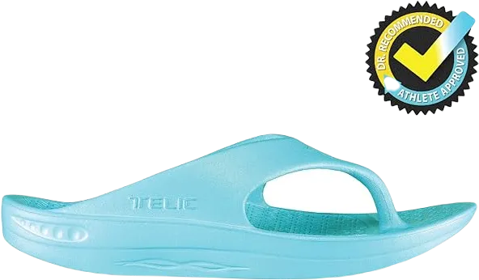
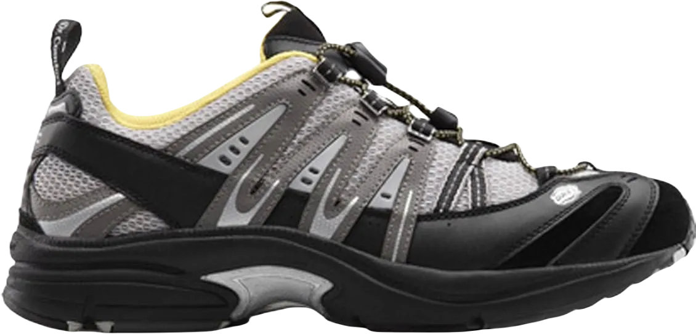

10 Best Running Shoes for Neuropathy of 2024
The best running shoes for neuropathy are those that offer complete comfort and a flexible design. In today's footwear market, there is a wide variety of shoes and boots available, and the industry has grown significantly over the years. When it comes to choosing the top running shoes for neuropathy, it's important to have a good understanding of what makes a shoe suitable for this condition.
Neuropathy is a common foot issue that many people experience, and wearing shoes for extended periods can sometimes lead to discomfort or complications. Finding the right shoes that cater to this specific condition can help alleviate some of the challenges faced by individuals who deal with neuropathy daily.
-
#1
Telic Shoe Arch Support Recovery Z-Strap Sandal
This sandal offers exceptional comfort and effectively alleviates neuropathic pain. The Z-straps Telic Support Recovery Sandal stands out as one of the best choices for those suffering from neuropathic foot pain. Due to its outstanding performance, the company has earned multiple accolades, making this sandal a top recommendation. Initially designed for athletes seeking ultra-performance, its remarkable features quickly made it popular among those dealing with neuropathy.
One of the key highlights of the Z-strap sandal is its construction. It is made from 100% Navolon, a high-quality material, with a synthetic outsole that enhances durability. The material used in the sole is pillow-soft, offering a plush, comfortable feel that is ideal for those dealing with foot pain.
What sets this sandal apart for neuropathy sufferers is its adaptable fitting. The sandal adjusts to the shape of the foot, providing a tailored fit that enhances comfort and support, making it a top choice for anyone seeking relief from neuropathic foot pain. -
#2
Ortho-feet Orthopedic Diabetic Men’s Sneakers
.webp)
The second shoe on the list is incredibly foot-friendly and designed for both comfort and style. Made from durable leather, this shoe offers long-lasting protection from external elements, making it a reliable choice. Its sleek design and premium material make it both fashionable and functional for daily wear.
One of the standout features of this shoe is its insole, crafted from high-quality orthotic material, complete with anatomical arch support. This is especially beneficial for people dealing with severe neuropathic pain, as it helps to relieve discomfort and provides much-needed support to the foot.
Additionally, the squishy cushioning at the heel molds perfectly to the shape of your foot, ensuring your feet remain relaxed even after prolonged use. The Ortho-Feet Men’s Sneaker is specifically designed to alleviate joint pain and soothe painful neuropathic feet, offering relief and comfort throughout the day. -
#3
Brooks Women’s Launch 4
.webp)
This shoe is designed specifically for women suffering from the painful effects of neuropathic foot conditions. The Brooks athletic shoe offers both comfort and relief for women dealing with foot pain, making it a perfect everyday option. Its sleek and supportive design makes it suitable for various activities, while still providing the necessary protection.
The shoe's eco-friendly midsole is crafted to alleviate stress, ensuring that your nerves stay relaxed throughout the day. Additionally, the shoe features soft, cushiony footbeds that cradle the ankle and heel, offering extra support and comfort for sensitive feet. This thoughtful design makes walking or standing for extended periods much more manageable.
For added protection, the outsole is made from resilient HPR Plus rubber, which is not only shock-repellent but also abrasion-proof. This feature is especially important for those with diabetes, as it helps to protect the feet from further injury. The shoe also includes a Mid-foot Transition Zone and a specially designed heel crash pad to enhance stability and safety during movement. -
#4
ASICS Men’s Gel-Venture 6
.webp)
This shoe is packed with features designed to alleviate the pain caused by neuropathy. The ASICS Men's Gel Venture-6 Running Shoe is equipped with a special rear-foot Gel cushioning system, which significantly reduces neuropathic foot pain. The gel cushioning not only provides excellent comfort but also absorbs shock and reduces the impact of jerks, making it an ideal choice for those who need extra support.
In addition to the gel technology, the shoe features a soft footbed that allows your feet to rest in a comfortable posture. This ensures that even after prolonged use, your feet remain relaxed and supported. The durable AHAR (ASICS High Abrasion Rubber) outsole offers exceptional grip, allowing for firm and stable footsteps, no matter the surface. The rubber sole provides multidirectional traction, making it easier to move with confidence.
What makes this shoe even more appealing is its removable sock-liner, which allows for custom orthotic inserts. This flexibility makes it a perfect option for those needing additional foot support. Available in a variety of colors and designs, this shoe offers both functionality and style, making it a great choice for anyone seeking comfort and performance. -
#5
Ortho-feet charlotte orthopedic
.webp)
There’s nothing quite like the relief of wearing a soft, comfortable shoe when dealing with neuropathic foot pain. Every inch of this shoe is crafted with special care and therapeutic qualities to soothe and comfort your aching feet. Designed with a focus on easing discomfort, this shoe offers much-needed solace to those suffering from neuropathy.
This shoe from the Charlotte brand plays a crucial role in improving the condition of neuropathic feet. With its gentle cushioning and supportive structure, it helps alleviate the pain that often comes with this condition. The design prioritizes both comfort and function, ensuring that every step feels lighter and more manageable.
The warm, cozy feel of the shoe provides peace to aching joints, helping to soothe and relieve discomfort. Its careful construction aims to support and ease pressure points, offering a therapeutic experience for anyone in need of a reliable, comfortable option for managing foot pain. -
#6
Propet men’s stability walker sneaker
.webp)
The Propet men's footwear is an excellent choice for those dealing with neuropathy and other foot ailments. Its high-quality leather upper offers durability and protection, ensuring the shoe lasts while maintaining an elegant design. This shoe is crafted to provide long-lasting comfort and support, making it ideal for sensitive feet.
What sets this shoe apart is its adaptable sole, constructed with EVA (Ethylene Vinyl Acetate), designed to alleviate the painful effects of neuropathy. This feature ensures a smooth, relaxing pace whether you're walking or running. The sole not only offers flexibility but also delivers the necessary support to ease discomfort during movement.
Additionally, this shoe is specially designed with Medicare/HCPCS code A5500 for extra-sensitive feet. It comes with cushioned, detachable Orthotic foot-beds, adding an extra layer of comfort and pain relief. The cushioning helps reduce pain while offering the necessary support, making it perfect for both walking and running activities. -
#7
Ortho-Feet Shever-pot
.webp)
Comfort and soothing are the hallmarks of this Ortho-Feet shoe, making it truly remarkable. You can't help but appreciate its thoughtful design. Made from premium quality nubuck leather, this shoe is built for durability and long-lasting wear. The cushioning is tailored to ease pains associated with neuropathy and other foot issues, providing much-needed relief.
The shoe features a premium orthotic insole that feels as soft as a pillow, giving you a sensation of gliding with every step. Its non-binding contour and ample toe space ensure a relaxed and snug fit, perfect for maintaining foot comfort. The shoe is designed to cradle your feet, offering exceptional support during walking and running, which makes it ideal for individuals who need extra care for their feet.
Additionally, this Ortho-Feet outdoor shoe is particularly beneficial for those suffering from hammertoes and bunion pain, thanks to its wide toe box. Beyond comfort, it is crafted with curative properties, enhancing foot health and providing a supportive wrap that allows for faster movement while keeping your feet pain-free. -
#8
Gravity Defyer mighty walk
.webp)
If you're searching for a top-tier running shoe designed to alleviate neuropathy-related pain, the Gravity Defyer Mighty Walk shoe stands out as an excellent choice. Built with durability and care, this shoe caters specifically to people with sensitive or aching feet. One of its key features is the seamless interior, which provides a soothing effect, allowing for long-term comfort throughout the day.
Despite its comforting features, this shoe remains lightweight, ensuring that you won't feel burdened even after wearing it for extended periods. Neuropathy sufferers often find heavy shoes irritating, but this design addresses that concern, offering a balance between comfort and weight. Whether you're walking or standing, this shoe helps you stay active and relaxed.
In addition to its comfort, the Gravity Defyer Mighty Walk shoe offers ample toe and heel space, providing extra room where you need it most. This spacious design ensures that both your toes and heels have enough room to move freely, making it perfect for all-day wear, especially for those dealing with foot pain. -
#9
Dr. Comfort performance X
The Dr. Comfort Performance X shoe is crafted with high-quality leather, providing not only a stylish look but also protection against harsh weather and environmental conditions. The durable leather acts as a shield, making this shoe a great option for those who need both style and functionality in various settings.
Designed with comfort in mind, this shoe features a padded lining and a gel cushion insert in the sole, offering significant relief for neuropathic foot pain. The soft gel cushions provide a soothing and supportive feel, helping to ease discomfort. Additionally, the extra depth in the shoe makes it ideal for individuals with wider feet or those experiencing severe pain, ensuring a more comfortable fit.
One of the standout features of the Dr. Comfort Performance X is the elastic strings, allowing for quick and easy wear. The shoe’s understated yet trendy design makes it perfect for both professional environments and daily tasks, providing both comfort and a polished appearance. -
#10
Skechers men’s after-burns sneaker
.webp)
This shoe is highly effective in alleviating persistent neuropathic foot pain. Its comfortable and soft cushioning effectively absorbs strain, providing much-needed relief for your feet. The lace-up design ensures a close and snug fit, allowing for supportive wear no matter how long or intensely you move.
Equipped with therapeutic memory foam, this shoe maintains a perfect balance between the arch and heel, helping to relieve stress and discomfort. This innovative feature enhances overall comfort during prolonged wear, making it ideal for daily activities.
Additionally, the advanced Articu-Lyte rubber outsole offers excellent traction and grip, ensuring stable footing with every step. This combination of features makes the shoe a fantastic choice for those seeking both comfort and support while managing neuropathic foot pain.